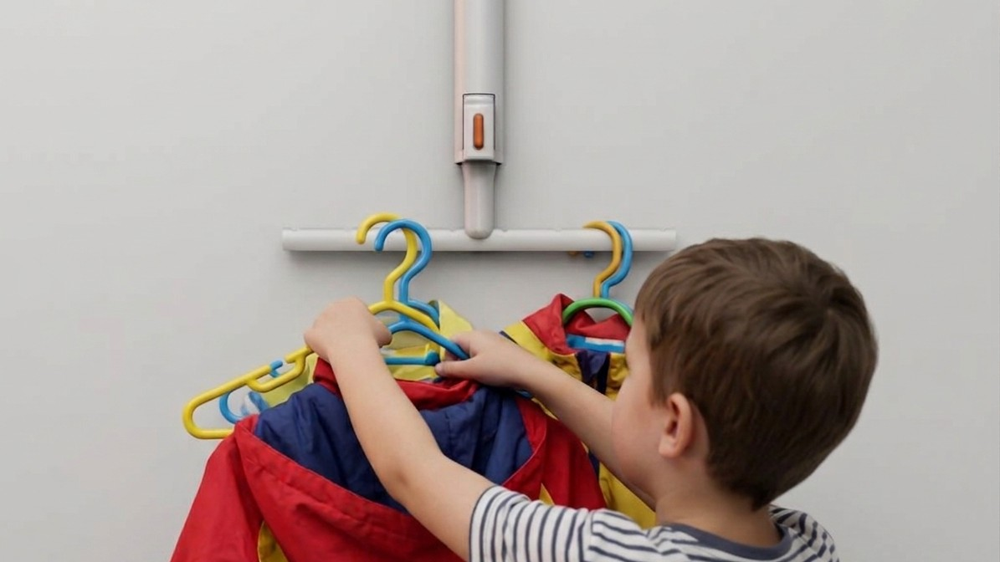

Concept Overview
아이의 눈높이에서 시작하는
정리 습관과 자립심.
아이키(I-Key)는 아동의 신체적 눈높이와 행동 패턴을 배려한 유니버셜 슬라이딩 도어훅입니다. 기존의 문걸이형 행거가 성인의 키에 맞춰져 있어 아이들이 스스로 옷을 걸거나 정리하기 어려웠던 생활 속 불편함을 해결하고, 어린 시절부터 자연스럽게 정리 습관과 자립심을 기를 수 있도록 기획되었습니다.
Design & Features
높이 조절 슬라이딩 메커니즘
아이의 성장 단계와 키에 맞춰 훅의 위치를 위아래로 부드럽게 조절할 수 있어, 아동기부터 성인이 될 때까지 오래 사용할 수 있습니다.
아동 친화적 안전 설계
부딪혀도 다치지 않도록 모서리를 둥글게 마감한 곡선형 폼팩터, 작은 힘으로도 쉽게 걸고 뺄 수 있는 직관적인 걸이 구조를 갖췄습니다.
공간 조화성
방문 상단에 간편하게 거치해 타공이나 시공이 필요 없고, 미니멀한 디자인과 조화로운 컬러로 어떤 인테리어에도 어우러집니다.


User Experience & Value
아이 스스로 할 수 있는 환경.
아이키는 단순한 수납 도구를 넘어 ‘아이 스스로 할 수 있는 환경’을 만들어 줍니다. 외출 후 자신의 외투나 가방을 자기 눈높이에 맞춰 직접 걸어두는 작은 성공 경험은 아이에게 성취감과 독립심을 심어주며, 가족 모두에게 더 편리하고 정돈된 주거 공간을 제안합니다.

-
STEP 1
문에 걸기
방문 상단에 걸기만 하면 끝. 별도의 타공이나 시공이 필요 없습니다.
-
STEP 2
높이 맞추기
아이의 키에 맞춰 훅 위치를 위아래로 부드럽게 밀어 조절합니다.
-
STEP 3
스스로 걸기
작은 힘으로도 쉽게 걸고 뺄 수 있어, 외투와 가방을 직접 걸어둡니다.
-
STEP 4
함께 자라기
성장에 맞춰 다시 높이를 옮기며, 아동기부터 성인까지 함께 사용합니다.
다음 작품